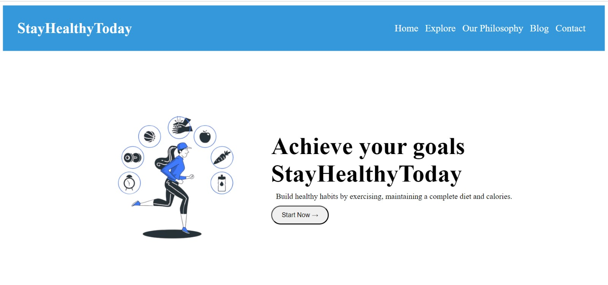
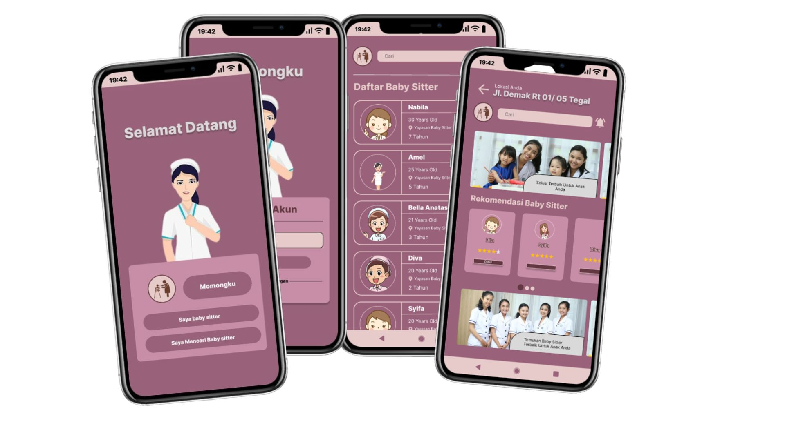
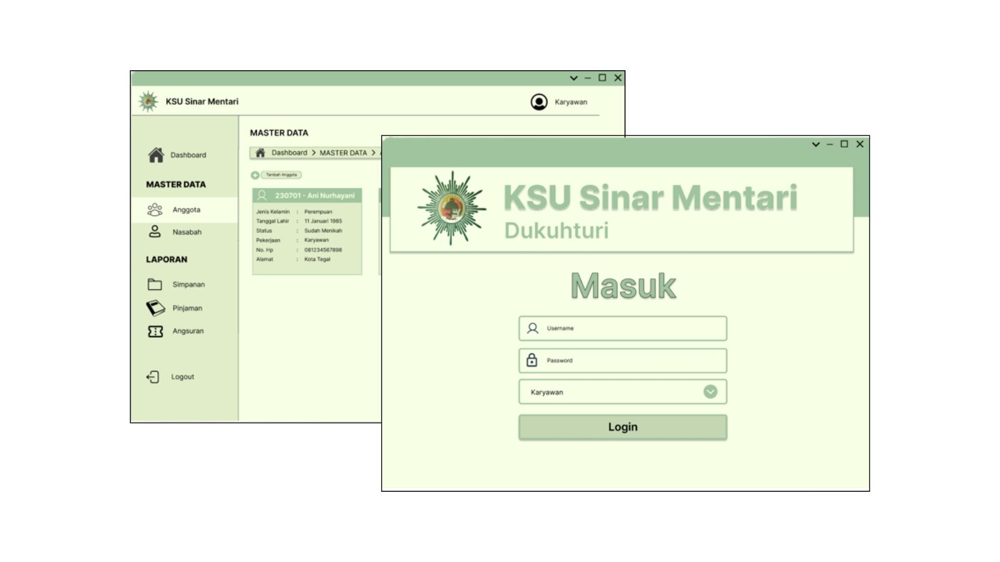

Service

Web Designer |

Web Developer |

UI/UX Designer |
Saya adalah Web Developer & UI/UX Designer
Halo, saya Tri Yuni Ayuningtyas, seorang Web Developer & UI/UX Designer. Saya memiliki keahlian dalam mengembangkan aplikasi web menggunakan HTML, CSS, dan JavaScript, serta merancang antarmuka pengguna yang menarik dan fungsional. Saya juga menekankan penggunaan prinsip-prinsip desain UI/UX untuk menciptakan pengalaman pengguna yang optimal. Saya memiliki keahlian dalam pembuatan prototipe, desain antarmuka pengguna yang menarik, dan pemahaman mendalam tentang responsivitas dan aksesibilitas.
Dengan latar belakang pengalaman, saya telah berkontribusi dalam proyek-proyek yang mencakup pembuatan website serta desain tampilan website dan membuat UI/UX untuk aplikasi mobile , saya telah belajar menghadapi tantangan dengan antusiasme dan inovasi. Saya menikmati proses kreatif dari konsepsi hingga pelaksanaan dan percaya bahwa setiap proyek adalah peluang untuk belajar lebih banyak.
Di samping pekerjaan, saya menikmati hobi yaitu membaca novel dan selalu bersemangat untuk tantangan baru. Jika Anda tertarik berkolaborasi atau berbicara lebih lanjut, silakan hubungi saya melalui Contact me.
|
Web Designer |
Web Developer |
UI/UX Designer |
|

Membuat Website Stay Healthy Today |

Desain tampilan halaman aplikasi Momomgku |

Desain tampilan halaman aplikasi dekstop koperasi |
Imatama bekerja sama dengan Delteknologi sejak 2017 dan telah mengembangkan tiga solusi utama. Pertama, "Modern ID in Transaction" untuk kerjasama dengan lembaga lain. Kedua, "Modern Application Development" dengan berkolaborasi dalam berbagai bahasa pemrograman. Dan ketiga, "Arti Security" yang berfokus pada layanan keamanan untuk klien, terutama di sektor keuangan. Imatama juga membuka lowongan bagi mereka yang ingin mengaplikasikan ilmu yang didapat di kampus dalam pekerjaan, mengingat pentingnya memiliki portofolio yang solid. Kesabaran dan konsistensi ditekankan, sambil terus membangun kemampuan teknis dan komunikasi. Selain itu, pembicara memberikan contoh konsep Minimum Viable Product (MVP) dalam menyelesaikan masalah, seperti aplikasi untuk membantu orang yang stres dengan memberikan layanan konsultasi.
Kesimpulan materi dari Mas Indra membahas tentang perubahan tren belanja dengan kemunculan platform seperti Tokopedia dan Shopee. Dia juga memperkenalkan Expo sebagai solusi untuk ekspediting exporting di dunia maritim. Mas Indra membahas keamanan data, peningkatan penggunaan Cloud, dan pentingnya sertifikasi. Dia memberikan gambaran tentang Open Shift, fokus pada mobile banking, dan mencatat pertumbuhan Open Source di industri. Mas Indra menyarankan untuk fokus belajar Open Source untuk meningkatkan peluang karir. Terakhir, dia membagikan tentang Landscape, produk, dan solusi yang ditawarkan oleh Pratama.
Pembicara pak Novi beliau adalah CEO dan pendiri komerce ,komerce star up yang berdiri di desa atau pelosok ,apa itu komerce ,komerce adalah aplikasi yang digunakan untuk berkonsultasi teknologi ,beliau pak Novi dahulunya adalah PNS abdi negara ,namun gajinya dinilai lebih kecil dari orang orang dari teknologi ,kemudian Beliau mendirikan aplikasi komerce Belian mejadi CEO sekaliagus fonder di komerce,beliau mengajarkan agar kita tuh dapat memanage teknologi dengan tepat ,beliau mengajarkan cara cara mendirikan starup seperti dirinya agar dapat maju dan sukses ,untuk motivasi pak Novi adalah memajukan UMKM .
AddressMahasiswa |
yuni75561@gmail.com |
Telp.085607460935 |
|
|
Figma
|
Sosial Media
|